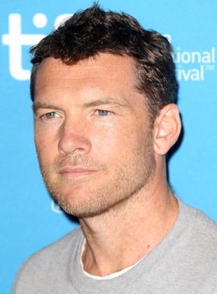
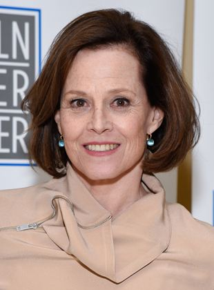

foto de zoe saldana

Aos 22 anos de idade, graduou-se em Artes Dramáticas, em 1998, na Austrália. Em seu primeiro papel como profissional na peça Judas Kiss (O Beijo de Judas), foi elogiado pela crítica local, o sucesso serviu para que ele entrasse na televisão australiana em diversos programas como o seriado "Water Rats". Seu primeiro prêmio como ator de cinema foi com o papel de Joe em Somersault, recebido em 2004 do Australian Film Institute. Sua carreira decolou internacionalmente em 2009 com o lançamento dos sucessos o Exterminador do Futuro - A Salvação e Avatar.
Zoe Saldana é uma atriz norte-americana, sendo a única atriz a estar presente nas duas maiores bilheterias da história do cinema: Vingadores: Ultimato (2019) e Avatar (2009). Embora tenha nascido nos Estados Unidos, a atriz mudou-se para a República Dominicana aos 10 anos de idade, onde estudou balé, e por lá ficou por cerca de sete anos. Seus pais são descendentes de dominicanos e porto riquenhos.

Possui uma estrela na Calçada da Fama, localizada em 7021 Hollywood Boulevard.